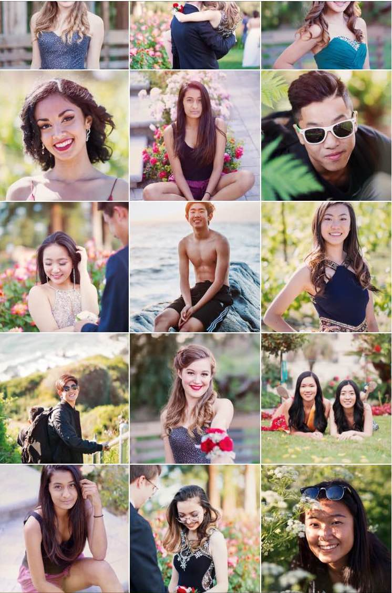
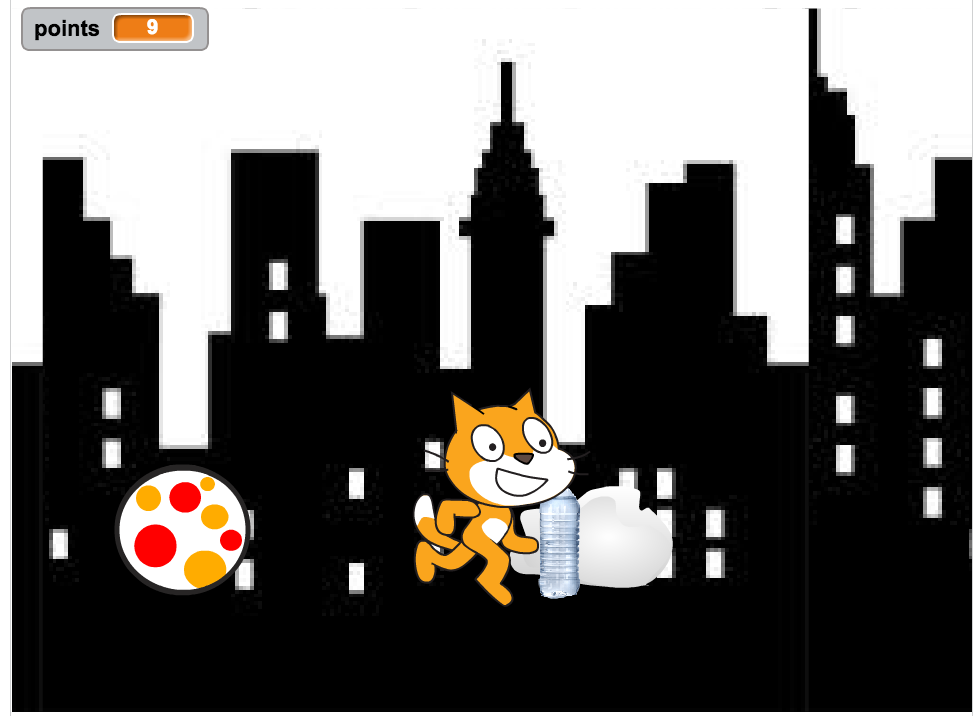

Hello! My name is Eileen Yang and I am an incoming Junior at Lynbrook High School in San Jose. I'm passionate about many clubs at school, those include Girls Who Code Club, Photography Club, Interact Club, and FBLA. I run Cross Country and Track at school. In my free time I enjoy running, watching Netflix, and going on photoshoots for my Instagram photography account.
Photography is my favorite hobby and it's something I use in my daily life. I'm VP of Photo Club and
Photography Editor for Lynbrook's Yearbook. I also run an Instagram account where I post my favorite pictures from my
prom, grad, and model photoshoots.

.........................
I like photography, watching netflix, target runs, Tumblr scrolling, and hanging out with friends.
I dislike mean people.
I use a lot of social media and there are a lot of webpages I go on when I am bored! These websites are my favorites. My favorite social media is Instagram , because I use it all the time. There are funny videos and pictures that I can look at on Instagram.
I also enjoy looking at funny posts and pretty pictures on Tumblr
This is a sidescroller game that Jenilee, Fatima, Carolyn and I created on Scratch.
The objective of the game is to collect the plastic bottles and avoid the gas clouds.
The purpose of the game is to educate players on the importance of recycling to help our environment.
